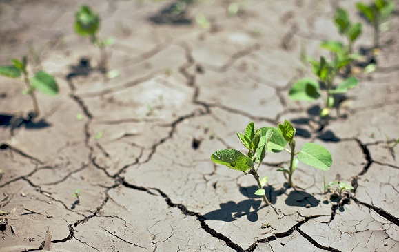

Экологические проблемы почв
Деградация земли

Регулярное земледелие, выращивание сельскохозяйственных культур приводит к деградации земли. Плодородная почва превращается в пустыню, что приводит к гибели и человеческих цивилизаций. Истощение грунта происходит постепенно и к нему приводят следующие действия:
- обильное орошение способствует засолению почвы;
- утрата органических веществ из-за недостаточного количества удобрений;
- чрезмерное использование пестицидов и агрохимикатов;
- нерациональное использование посевных площадей;
- бессистемный выпас скота;
- ветровая и водная эрозия из-за вырубки лесов.
Высадка лесов предотвращает образование оврагов
Загрязнение почвы

Кроме проблемы эрозии и истощения в результате сельского хозяйства существует еще одна проблема. Это загрязнение почвы различными источниками:
- отходами промышленности;
- разливом нефтепродуктов;
- минеральными удобрениями;
- отходами транспорта;
- строительство дорог, транспортных узлов;
- урабанизационные процессы.
Необходимо контролировать деятельность человека, иначе от Земли ничего не останется